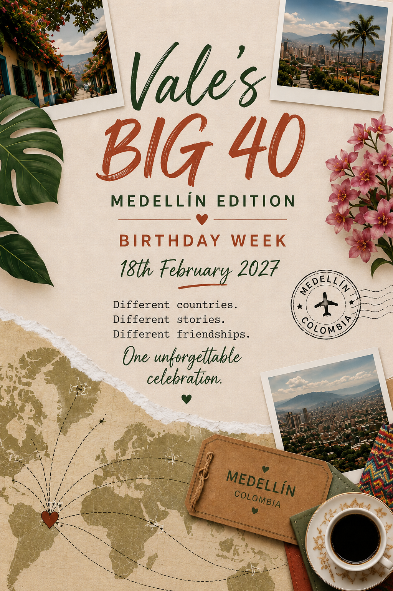

Welcome dinner
A relaxed first evening to meet, eat and raise the first glass.
The countdown
Explore the site
Welcome
One of the things I say most often is how lucky I feel because of the people in my life. My friendships come from different countries, different chapters and completely different versions of me. For my fortieth birthday, I have decided to dream big and try to bring those worlds together.
This will be more than a party. It will be a Birthday Week filled with shared meals, adventures, music, laughter and enough free time for everyone to enjoy Medellín in their own way.
RSVP NOW!Birthday Week
The final schedule will depend on arrivals, group size and everyone's interests. This is the first working version.
A relaxed first evening to meet, eat and raise the first glass.
A colourful day trip with optional climb, lunch and time by the water.
Comuna 13, city views and an easy evening before the main celebration.
The main event. Exact venue and format will be chosen once we know the group size.
Sun, music, food and absolutely no ambitious plans.
One last shared adventure, with the option to explore independently.
Travel guide
Search several date combinations and compare Google Flights, Skyscanner and Momondo. Medellín's main international airport is José María Córdova, code MDE.
There is no need to rent a car in the city. We will use organised transfers, registered taxis or established ride apps, depending on current local guidance.
Cards are widely useful, but carry a small amount of Colombian pesos. Use bank ATMs, decline unnecessary currency conversion and tell your bank you are travelling.
An eSIM or local SIM makes maps and transport much easier. Exact providers and recommended packages will be updated closer to the trip.
Pack breathable layers, a light rain jacket, comfortable shoes, sun protection and one birthday outfit. Medellín is mild, but evenings and day trips can feel cooler.
Stay aware, keep valuables discreet, avoid walking alone late at night, watch your drink and use trusted transport. We will share updated group guidance before departure.
Where to stay
Convenient for a first visit, with many hotels, restaurants and nightlife. Often the easiest option, but usually the most expensive.
€€€More residential and walkable, with cafés, restaurants and a strong local feel. My likely first choice for independent accommodation.
€€Calmer and more local, just south of Medellín. Good for people who value neighbourhood life over nightlife.
€€A budget friendly, local option farther south. Better for longer stays than for a short, activity packed visit.
€Once the first RSVP round is complete, I will decide whether it makes sense to reserve a shared villa, several apartments close to one another, or independent accommodation with one central celebration venue.
Colombia & Medellín
Colombia is a country of extraordinary landscapes, regional cultures, music, food and warmth. Its international reputation is still heavily shaped by a difficult past, but that is only one part of a much larger and more complex story.
Medellín has undergone a remarkable urban and social transformation. Local guides, artists, entrepreneurs and residents are proud of the progress their city has made and often welcome visitors with genuine care. That does not mean ignoring real risks. It means travelling informed, staying in suitable areas, using trusted transport and applying the same good judgement you would use in any large city.
Important: travel conditions can change. Before booking, check the official travel advice issued by your own government and arrange suitable travel insurance.
Colourful streets, painted zócalos and a full day by the reservoir.
Full dayA famous climb and panoramic views over the surrounding lakes.
Half day or combined with GuatapéStreet art, escalators and local stories, best experienced with a community guide.
Half dayLearn how Colombian coffee travels from plant to cup.
Half or full dayA green escape reached by cable car, with trails and fresh mountain air.
Half dayA friendly class followed by music, drinks and a chance to test our new moves.
EveningAbout Vale
I have spent much of my adult life moving between countries, jobs, friendships and adventures. I have lived abroad, worked in travel and education, taught Italian online, guided groups across Europe and travelled independently through more places than I can easily count.
Every chapter introduced me to people who became part of my life in completely different ways. Some friendships were born at work, others while travelling, studying, teaching or simply being in the right place at the right time.
That is why this birthday is not only about turning forty. It is about celebrating the people who made these years fuller, richer and far more interesting than I could ever have planned.
Join us
Please complete the short form by 1 October 2026. This is an expression of interest, not a final commitment.
RSVP now
FAQ
No. Join for the dates that work for you. The main celebration will be on 18 February 2027.
Yes, but please include them in the RSVP so accommodation and activities can be planned accurately.
Possibly. It depends on numbers, preferences and budget. The first RSVP is designed to help make that decision.
Not at all. Most activities will be optional, and there will be free time.
Start tracking prices now, but wait for the first planning update before booking if your dates depend on group accommodation.
Yes, once the likely guest list is clearer. Until then, updates will be shared individually.